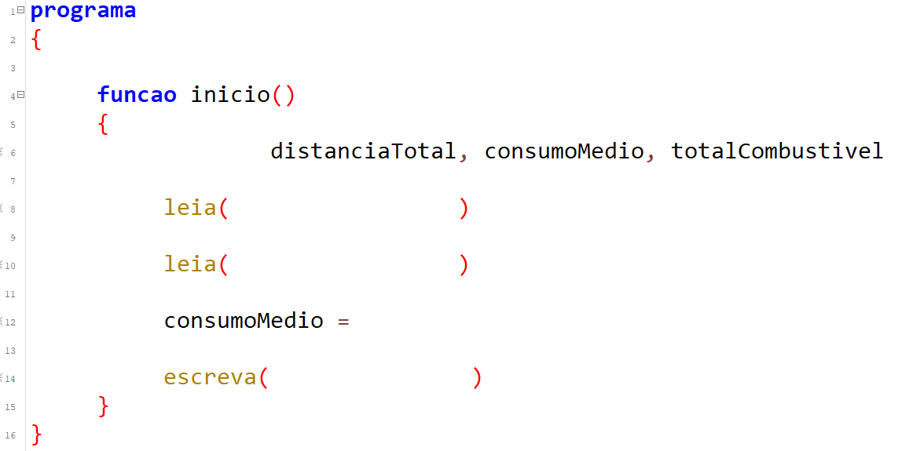

Etapa 1
Quais são as formas de representação de um algoritmo?
Etapa 2

João fez uma viagem de carro até Belo Horizonte e gostaria de calcular o
consumo médio do carro. Como seria um algoritmo para este problema,
sabendo a distância total percorrida (em Km) e o total de combustível
gasto (em litros)?
distância total
total combustível
consumo médio
Entrada
Saída
Etapa 3

Considerando este problema, quais são os dados de entrada e saída?
Arraste-os para as áreas correspondentes:
Agora, vamos escrever o algoritmo em Pseudocódigo? Preencha os espaços
faltantes:
Lógica de Programação